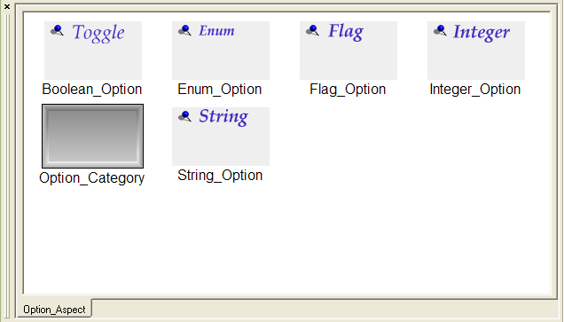
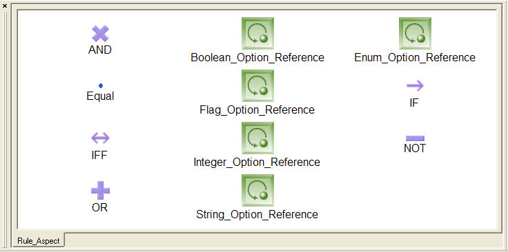
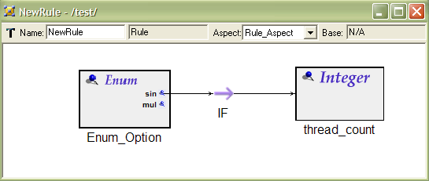
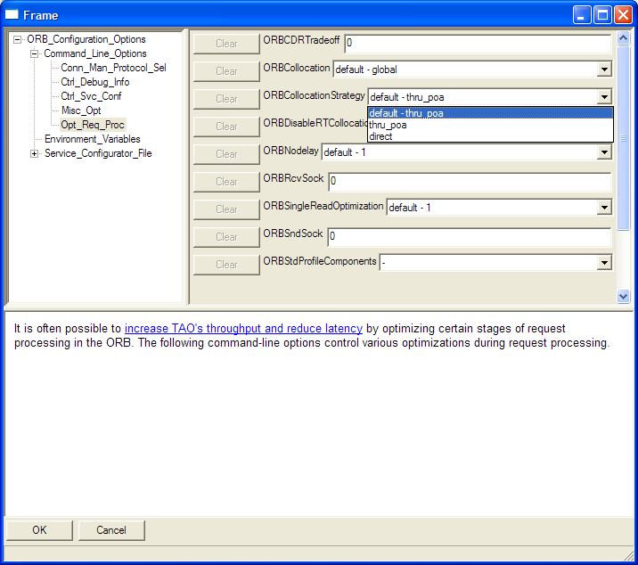

Options Configuration Modeling Language (OCML) is a language developed to provide constraints and dependencies of the options used to customize the libraries and tools used by the application developers. OCML is defined in the GME meta-modeling paradigm to form a base for the tool specific option rule definitions. GME as a sophisticated modeling environment, is used to visually represent the OCML and the tool specific option rule definitions. In GME, OCML is defined as a meta-model for the tool-specific option rule definitions. This section explains the general structure of an OCML model and the outputs resulted from an interpretation process.
For each application or library the tool developer should define a new OCML model. To create a new OCML model in GME:
You can insert two different kind of models into your project: (1) Option Category, and (2) Rule.
To add a new category, right click on the model tree and select Insert Model -> Option Category. After you give a name to your category you can double click it to define it. Options hierarchically reside in the option categories. An option category may include other option categories recursively.
There are five elements an option category can contain in addition to other option categories. (see Figure: Options Aspect )
Each of the option elements has one common attribute, description. You can add textual description describes the effects of this option. In addition to the pure textual descriptions, you can add HTML tags for better visualization.
The second model you can insert to your OCML model is rule definitions. To add a new rule definitions model, right click on the model tree and select Insert Model -> Rule. After you give a name to the new rule model you can double click it to define it. A rule is the combination of logical operations. A rule can contain other rules or references to options associated with the following logical operators. (see Figure: Rule Aspect )
A rule is defined by connecting references to the options to the logical operators. Assuming we have two options such as enum option: concurrency (which can have values, single threaded and multi threaded ) and integer option: thread count. We want to define a rule such as If the concurrency is set to single threaded the thread count cannot have any other value than 1. If we would like to write this in a textual form it would be,
concurrency = single_threaded => thread_count=1 .
To define this rule in our OCML rule model, we need to follow these steps:
The final look of the rule is given in the Figure below.
The modeled options and rules can be exported into an xml file by invoking the OCML interpreter registered with the OCML paradigm. To do this, simply click the OCML Interpreter button on tool bar. Then a save file dialog will appear asking a file name to save the model. The exported file will be used by the OCML configurator which is a graphical user interface for editing options.
Option Configurator provides a graphical user interface for users to enter values for the options modeled within the GME OCML paradigm. Different editing areas are used for different option types (i.e. while integer and string options are edited in a text area, for the enum option the configurator displays a combo box where all the possible values are shown and one can be selected.)
The value in the description attribute of the OCML modeling elements are displayed in a text area to provide assistance for the user. The rules defined in the rules paradigm are enforced by the OCML Configurator (i.e. the rule defined in the section OCML rule paradigm will prevent the thread count option to have a value different then 1, if the concurrency option's value is single threaded.
